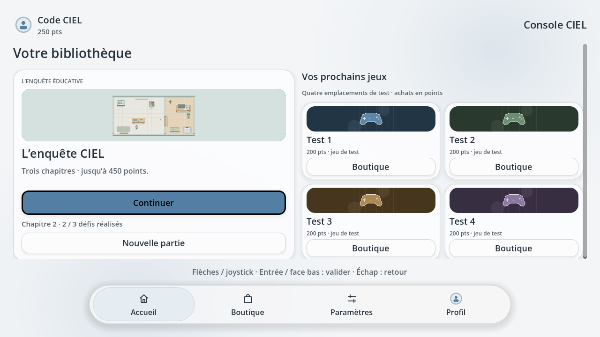

~/profile
Loghan·
Étudiant en informatique · Développeur
Créer des logiciels. Explorer les systèmes.
Apprendre à travers des projets et des CTFs.
Étudiant en informatique · Développeur
Étudiant en informatique · Développeur
Créer des logiciels. Explorer les systèmes.
Apprendre à travers des projets et des CTFs.
Des idées aux lignes de code.
Et tout ce qu’il reste à explorer.
Moi, c’est Loghan. Sur le web, its lizhy. J’aime comprendre comment les choses fonctionnent. Puis leur donner ma propre forme.
Étudiant en informatique, je construis mes compétences en créant : des logiciels, des expériences web et de petits projets qui répondent à une idée simple. Les systèmes, Linux et la cybersécurité font aussi partie du terrain de jeu.
Découvrir mes projetsPENSER. CONSTRUIRE. AMÉLIORER.
Deux projets, une même envie : créer des outils simples et comprendre ce qu’il y a derrière.

Une enquête éducative et une bibliothèque de jeux, créées avec Godot. Explorer, résoudre des pannes et découvrir l’informatique en jouant, hors ligne.
Toujours une nouvelle idée dans un coin de la tête.
Une idée. Un essai. Une nouvelle version.
C’est comme ça que j’avance.
Un projet, une question, ou simplement envie d’échanger ?